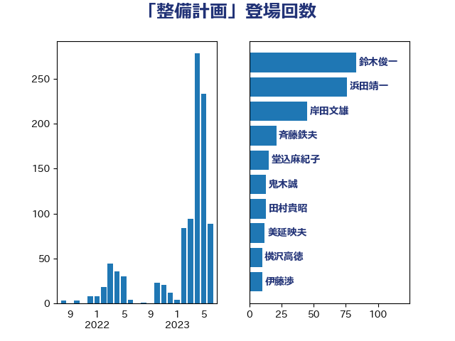

単語「整備計画」

| 鈴木俊一 | 自由民主党 | 83 回 |
| 浜田靖一 | 自由民主党 | 76 回 |
| 岸田文雄 | 自由民主党 | 45 回 |
| 斉藤鉄夫 | 公明党 | 21 回 |
| 堂込麻紀子 | 無所属 | 15 回 |
| 鬼木誠 | 立憲民主党 | 13 回 |
| 田村貴昭 | 日本共産党 | 13 回 |
| 美延映夫 | 日本維新の会 | 12 回 |
| 横沢高徳 | 立憲民主党 | 10 回 |
| 伊藤渉 | 公明党 | 10 回 |
| 井野俊郎 | 自由民主党 | 10 回 |
| 階猛 | 立憲民主党 | 9 回 |
| 西村康稔 | 自由民主党 | 9 回 |
| 根本匠 | 自由民主党 | 9 回 |
| 嘉田由紀子 | 無所属 | 9 回 |
| 平木大作 | 公明党 | 8 回 |
| 小西洋之 | 立憲民主党 | 8 回 |
| 大塚拓 | 自由民主党 | 8 回 |
| 木村次郎 | 自由民主党 | 7 回 |
| 小野田紀美 | 自由民主党 | 7 回 |
| 伊波洋一 | 無所属 | 7 回 |
| 井上哲士 | 日本共産党 | 7 回 |
| 上田勇 | 公明党 | 7 回 |
| 三上えり | 立憲民主党 | 7 回 |
| 青山大人 | 立憲民主党 | 6 回 |
| 米山隆一 | 立憲民主党 | 6 回 |
| 岩本剛人 | 自由民主党 | 6 回 |
| 塩川鉄也 | 日本共産党 | 6 回 |
| 塚田一郎 | 自由民主党 | 6 回 |
| 中山展宏 | 自由民主党 | 6 回 |
| 赤嶺政賢 | 日本共産党 | 5 回 |
| 福田昭夫 | 立憲民主党 | 5 回 |
| 渡辺周 | 立憲民主党 | 5 回 |
| 浜地雅一 | 公明党 | 5 回 |
| 前原誠司 | 国民民主党 | 5 回 |
| 井上貴博 | 自由民主党 | 5 回 |
| 西田昭二 | 自由民主党 | 4 回 |
| 羽田次郎 | 立憲民主党 | 4 回 |
| 石川博崇 | 公明党 | 4 回 |
| 石原正敬 | 自由民主党 | 4 回 |
| 城井崇 | 立憲民主党 | 4 回 |
| 北村経夫 | 自由民主党 | 4 回 |
| 佐藤正久 | 自由民主党 | 4 回 |
| 高橋千鶴子 | 日本共産党 | 3 回 |
| 阿部知子 | 立憲民主党 | 3 回 |
| 阿部司 | 日本維新の会 | 3 回 |
| 金子恭之 | 自由民主党 | 3 回 |
| 越智隆雄 | 自由民主党 | 3 回 |
| 穀田恵二 | 日本共産党 | 3 回 |
| 秋野公造 | 公明党 | 3 回 |
| 源馬謙太郎 | 立憲民主党 | 3 回 |
| 渡辺猛之 | 自由民主党 | 3 回 |
| 泉田裕彦 | 自由民主党 | 3 回 |
| 柴田巧 | 日本維新の会 | 3 回 |
| 末松信介 | 自由民主党 | 3 回 |
| 岡田直樹 | 自由民主党 | 3 回 |
| 山添拓 | 日本共産党 | 3 回 |
| 山崎正恭 | 公明党 | 3 回 |
| 小田原潔 | 自由民主党 | 3 回 |
| 宮本岳志 | 日本共産党 | 3 回 |
| 宮崎勝 | 公明党 | 3 回 |
| 宮口治子 | 立憲民主党 | 3 回 |
| 古川元久 | 国民民主党 | 3 回 |
| 勝部賢志 | 立憲民主党 | 3 回 |
| 倉林明子 | 日本共産党 | 3 回 |
| 伊佐進一 | 公明党 | 3 回 |
| 中西祐介 | 自由民主党 | 3 回 |
| 高良鉄美 | 無所属 | 2 回 |
| 高橋英明 | 日本維新の会 | 2 回 |
| 高村正大 | 自由民主党 | 2 回 |
| 馬淵澄夫 | 立憲民主党 | 2 回 |
| 阿達雅志 | 自由民主党 | 2 回 |
| 長島昭久 | 自由民主党 | 2 回 |
| 金子道仁 | 日本維新の会 | 2 回 |
| 藤巻健太 | 日本維新の会 | 2 回 |
| 羽生田俊 | 自由民主党 | 2 回 |
| 細田博之 | 自由民主党 | 2 回 |
| 篠原豪 | 立憲民主党 | 2 回 |
| 笠井亮 | 日本共産党 | 2 回 |
| 福島伸享 | 無所属 | 2 回 |
| 石井拓 | 自由民主党 | 2 回 |
| 熊田裕通 | 自由民主党 | 2 回 |
| 滝沢求 | 自由民主党 | 2 回 |
| 清水貴之 | 日本維新の会 | 2 回 |
| 泉健太 | 立憲民主党 | 2 回 |
| 河西宏一 | 公明党 | 2 回 |
| 横山信一 | 公明党 | 2 回 |
| 末松義規 | 立憲民主党 | 2 回 |
| 岬麻紀 | 日本維新の会 | 2 回 |
| 山口俊一 | 自由民主党 | 2 回 |
| 宮澤博行 | 自由民主党 | 2 回 |
| 宮本徹 | 日本共産党 | 2 回 |
| 大野敬太郎 | 自由民主党 | 2 回 |
| 大石あきこ | れいわ新選組 | 2 回 |
| 大塚耕平 | 国民民主党 | 2 回 |
| 原口一博 | 立憲民主党 | 2 回 |
| 加藤鮎子 | 自由民主党 | 2 回 |
| 加藤勝信 | 自由民主党 | 2 回 |
| 仁比聡平 | 日本共産党 | 2 回 |
| 中川宏昌 | 公明党 | 2 回 |
| 黄川田仁志 | 自由民主党 | 1 回 |
| 馬場伸幸 | 日本維新の会 | 1 回 |
| 音喜多駿 | 日本維新の会 | 1 回 |
| 長浜博行 | 無所属 | 1 回 |
| 長妻昭 | 立憲民主党 | 1 回 |
| 鈴木敦 | 国民民主党 | 1 回 |
| 金子俊平 | 自由民主党 | 1 回 |
| 金城泰邦 | 公明党 | 1 回 |
| 重徳和彦 | 立憲民主党 | 1 回 |
| 酒井庸行 | 自由民主党 | 1 回 |
| 道下大樹 | 立憲民主党 | 1 回 |
| 赤羽一嘉 | 公明党 | 1 回 |
| 豊田俊郎 | 自由民主党 | 1 回 |
| 西田実仁 | 公明党 | 1 回 |
| 藤田文武 | 日本維新の会 | 1 回 |
| 藤岡隆雄 | 立憲民主党 | 1 回 |
| 若宮健嗣 | 自由民主党 | 1 回 |
| 舩後靖彦 | れいわ新選組 | 1 回 |
| 細野豪志 | 自由民主党 | 1 回 |
| 稲津久 | 公明党 | 1 回 |
| 福島みずほ | 社会民主党 | 1 回 |
| 福山哲郎 | 立憲民主党 | 1 回 |
| 神津たけし | 立憲民主党 | 1 回 |
| 磯崎仁彦 | 自由民主党 | 1 回 |
| 石井苗子 | 日本維新の会 | 1 回 |
| 石井準一 | 自由民主党 | 1 回 |
| 石井啓一 | 公明党 | 1 回 |
| 矢倉克夫 | 公明党 | 1 回 |
| 田村智子 | 日本共産党 | 1 回 |
| 田島麻衣子 | 立憲民主党 | 1 回 |
| 田中健 | 国民民主党 | 1 回 |
| 玄葉光一郎 | 立憲民主党 | 1 回 |
| 猪瀬直樹 | 日本維新の会 | 1 回 |
| 牧野たかお | 自由民主党 | 1 回 |
| 牧原秀樹 | 自由民主党 | 1 回 |
| 熊谷裕人 | 立憲民主党 | 1 回 |
| 瀬戸隆一 | 自由民主党 | 1 回 |
| 漆間譲司 | 日本維新の会 | 1 回 |
| 浅野哲 | 国民民主党 | 1 回 |
| 永岡桂子 | 自由民主党 | 1 回 |
| 櫻井周 | 立憲民主党 | 1 回 |
| 榛葉賀津也 | 国民民主党 | 1 回 |
| 森屋隆 | 立憲民主党 | 1 回 |
| 梅村聡 | 日本維新の会 | 1 回 |
| 柴愼一 | 立憲民主党 | 1 回 |
| 柚木道義 | 立憲民主党 | 1 回 |
| 松野博一 | 自由民主党 | 1 回 |
| 松本剛明 | 自由民主党 | 1 回 |
| 木原誠二 | 自由民主党 | 1 回 |
| 朝日健太郎 | 自由民主党 | 1 回 |
| 新垣邦男 | 立憲民主党 | 1 回 |
| 斎藤アレックス | 国民民主党 | 1 回 |
| 掘井健智 | 日本維新の会 | 1 回 |
| 後藤茂之 | 自由民主党 | 1 回 |
| 岸信千世 | 自由民主党 | 1 回 |
| 岡本三成 | 公明党 | 1 回 |
| 山谷えり子 | 自由民主党 | 1 回 |
| 山田美樹 | 自由民主党 | 1 回 |
| 山本順三 | 自由民主党 | 1 回 |
| 山崎誠 | 立憲民主党 | 1 回 |
| 山岸一生 | 立憲民主党 | 1 回 |
| 山下芳生 | 日本共産党 | 1 回 |
| 尾辻秀久 | 無所属 | 1 回 |
| 小沼巧 | 立憲民主党 | 1 回 |
| 小池晃 | 日本共産党 | 1 回 |
| 小森卓郎 | 自由民主党 | 1 回 |
| 小林鷹之 | 自由民主党 | 1 回 |
| 小林茂樹 | 自由民主党 | 1 回 |
| 太田房江 | 自由民主党 | 1 回 |
| 大野泰正 | 自由民主党 | 1 回 |
| 堀井巌 | 自由民主党 | 1 回 |
| 城内実 | 自由民主党 | 1 回 |
| 國場幸之助 | 自由民主党 | 1 回 |
| 吉田はるみ | 立憲民主党 | 1 回 |
| 古賀友一郎 | 自由民主党 | 1 回 |
| 加藤竜祥 | 自由民主党 | 1 回 |
| 伊藤俊輔 | 立憲民主党 | 1 回 |
| 今枝宗一郎 | 自由民主党 | 1 回 |
| 井坂信彦 | 立憲民主党 | 1 回 |
| 中西健治 | 自由民主党 | 1 回 |
| 上野賢一郎 | 自由民主党 | 1 回 |
| ながえ孝子 | 無所属 | 1 回 |
| おおつき紅葉 | 立憲民主党 | 1 回 |